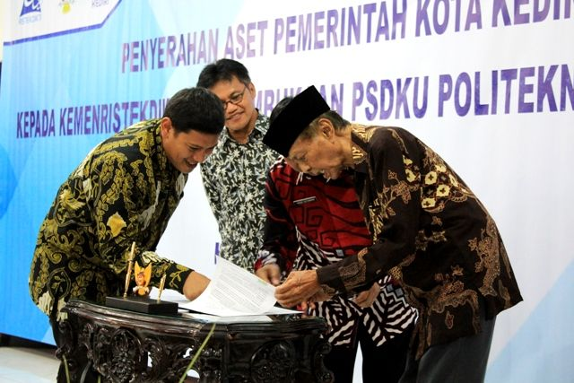

About
Politeknik Negeri Malang, awalnya bernama Program Pendidikan Diploma Bidang Teknik, Universitas Brawijaya, dibuka berdasarkan Surat Keputusan Dirjen DIKTI, MENDIKBUD No. 03/DJ/Kep/1979, didirikan oleh Pemerintah Indonesia melalui dana Bank Dunia dengan Tenaga Ahli dari Swiss. Pada tahun 1982, Susunan Organisasinya diatur melalui Keputusan Presiden Republik Indonesia No. 59 Tahun 1982, bernama Fakultas Non Gelar Teknologi, Universitas Brawijaya dan mulai menerima mahasiswa angkatan I melalui 4 (empat) jurusan, yaitu Jurusan Teknik Elektronika, Jurusan Teknik Listrik, Jurusan Teknik Mesin, dan Jurusan Teknik Sipil.
Pada tahun 1986 dibuka Jurusan Teknik Telekomunikasi, Jurusan Akuntansi, dan Jurusan Administrasi Niaga. Jurusan Akuntansi dan Jurusan Administrasi Niaga mendapatkan bantuan dari The Australian Project dengan Tenaga Ahli dari Australia. Kemudian pada tahun 1987 dibuka Jurusan Teknik Kimia.
Gallery

Foto Gedung Politeknik PSDKU Kediri
Politeknik (Poltek) Kediri sebagai Program Studi di luar Kampus Utama (PSDKU) Politeknik Negeri Malang (Polinema).
Baca SelengkapnyaSelangkah Lagi Poltek Kediri Jadi Kampus Negeri
Tinggal selangkah lagi Politeknik atau Poltek Kediri jadi kampus negeri atau perguruan tinggi negeri PTN. Poltek Kediri bakal menjadi bagian Progam Studi Diluar Kampus Utama (PSDKU) Politeknik Negeri Malang (Polinema).
Baca Selengkapnya

Pemkot Serahkan Aset ke Kemenristekdikti
Mantan Wali Kota Kediri Maschut (kanan) membubuhkan tanda tangan saat penyerahan aset kemarin. Disaksikan Wali Kota Kediri Abu Bakar (kiri). (Didin Saputro - radarkediri.id)
Baca SelengkapnyaContact Us
Alamat
jalan raya wates